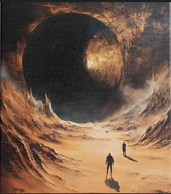
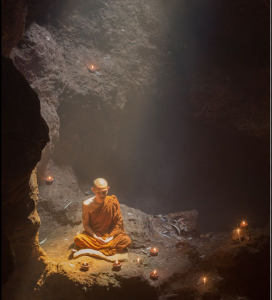

Olympus Mons is the tallest mountain across the entire
solar system, standing approximately 13.6 miles high.
It is around 2.5 times the size of Mount Everest,
and covers a area of land that compares to the size
of France.
Atop this mountain, you will
find many yet-to-be discovered martian species, such
as the ΔΞὰ, the ζφὓϘ, and the dominating species in
the region of Olympus Mons, the ϚϟϘϿͷ.
(these names are impossible to be pronounced by
human tongue)


This resturaunt/bar is at the top of the must-visit list for Mars. Home to a veriety of martian dining experiences, this spot pulls in about 2,000 off-world visitors every day. Here, you can take the galactic elevator 40,000 feet high to dine on their most exquisite menu while sitting at one of the most astonishing views of Mars. Additionally, on the first floor, you can watch ΘΞφͰ themself cook extravagant dishes such as ὉͰϏϛ eyeballs in a spiced stew, or ἶΏϟϠ buttocks with an intestine puree.
Some of my favorite dishes:
Many ϚϟϘϿͷ will engage in the spiritual practice of cave meditation. It is tradition that when and individual reaches their 378th year of life, they spend an entire Mars year (627 days) meditating in the utter darkness of deep martian caves. Common practice for other-wordly visitors is to spend a comparable amount of time to their species' lifespan meditating in these sacred caves. Many report immensely psychadelic, spiritual experiences from this prolonged and isolated period of meditation, saying they mentally communicated with the conscious embodiment of Mars itself.
 